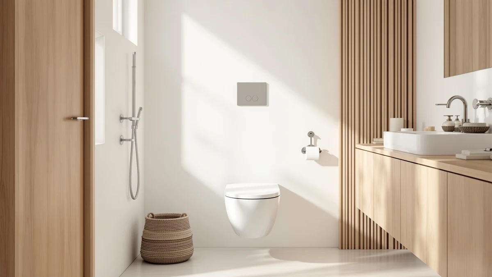

Kohler 30810-RA-0 Santa Rosa One-Piece Compact Elongated Toilet Review (2026): Worth It?


Quick Answer
The Kohler 30810-RA-0 Santa Rosa One-Piece Compact Elongated Toilet pairs a 1.28 GPF Revolution 360 Swirl flush with Comfort Height seating for $523.50, putting it within fifty cents of the TOTO Ultramax below and well under the American Standard Compact Cadet 3. It earns the price if you want a space-saving compact elongated bowl without paying for smart features; buyers who want a built-in bidet should look at the EPLO pick instead.
Our pick: KOHLER 30810-RA-0 Santa Rosa One-Piece — $523.50 Check Price on Amazon
Bottom line: our top pick is the KOHLER 30810-RA-0 Santa Rosa One-Piece Compact Elongated 1.28 at $523.50.
Things to Know Before You Buy
- The Santa Rosa 30810-RA-0 is a one-piece toilet, so the tank and bowl form a single ceramic shell with no seam for grime to collect, unlike a two-piece model.
- Kohler rates the flush at 1.28 GPF using Revolution 360 Swirl Flushing Technology, and pairs it with Comfort Height seating for easier sitting and standing.
- At $523.50, it costs about fifty cents more than the TOTO Ultramax ($523.00), $15.50 less than the American Standard Compact Cadet 3 ($539.00), and $23.51 more than the EPLO smart bidet toilet ($499.99).
- The compact elongated bowl occupies the same footprint as a round-front toilet, which matters in smaller bathrooms where a full elongated bowl wouldn't fit.
- Amazon's listing doesn't show a public star rating or review count for this ASIN, so we can't cite one here, and a missing rating is not the same as a zero rating.
This Kohler 30810-RA-0 Santa Rosa One-Piece Compact Elongated Toilet review exists because the model keeps showing up in compact-bathroom searches, yet few reviews actually weigh whether the price matches the feature set. At $523.50, it sits in the middle of the one-piece toilets we track in this category. We wanted to know whether Revolution 360 Swirl Flushing Technology and Comfort Height seating justify that price against three close rivals, so we went through Kohler's published spec sheet, the current Amazon price and the broader market for compact one-piece toilets in this range. This review is based entirely on what Kohler publishes about the toilet, current pricing and the patterns in verified owner reviews for each of the three alternatives we compared it against.
The short version: the Santa Rosa 30810-RA-0 is a solid pick if you want a compact elongated bowl that fits a smaller bathroom without giving up Comfort Height seating, and you don't need bidet functions or smart features. If price is the only factor, the TOTO Ultramax below costs about fifty cents less for a similar one-piece design. If you want a built-in bidet, heated seat and air dryer, the EPLO alternative covers that ground and costs $23.51 less.
Why You Should Trust Us
Ilane Tall researches bathroom fixtures for Best One Piece Toilets, tracking manufacturer spec sheets, Amazon price movement and patterns across verified owner reviews for one-piece toilets like the Santa Rosa 30810-RA-0. This Kohler review is built entirely from public manufacturer data, current Amazon pricing and the feedback buyers leave on listing pages.
We do not run a testing lab. This research compares manufacturer data, pricing and owner feedback rather than personal use of the toilet. When Kohler doesn't publish a figure, such as a rough-in distance, or Amazon doesn't show a rating for this ASIN, we say so in this review instead of filling in a number we don't have.
Our Research Experience
To put together this Kohler 30810-RA-0 Santa Rosa one-piece toilet review, we started with Kohler's published specs and feature list, then checked the current Amazon price and cross-referenced it against three other toilets in a similar price band: the TOTO Ultramax, the American Standard Compact Cadet 3 and the EPLO smart bidet toilet. We looked for patterns in verified owner reviews on each listing, focusing on recurring comments about fit, flush performance and ease of cleaning rather than one-off complaints.
We excluded toilets without a public spec sheet or without enough verified reviews to establish a pattern. Where Kohler doesn't publish a dimension, such as rough-in distance or bowl height, or Amazon doesn't show a review count for this ASIN, we note that the figure is unavailable rather than guessing at it.
Overview & Specs

KOHLER 30810-RA-0 Santa Rosa One-Piece
What we like
- One-piece shell removes the seam between tank and bowl where grime collects on two-piece toilets
- Compact elongated bowl fits the footprint of a round-front toilet while keeping elongated-style seating
- Comfort Height seating and Revolution 360 Swirl Flushing Technology are built in at no added cost
Flaws but not dealbreakers
- At $523.50, it costs about fifty cents more than the TOTO Ultramax in this comparison
- Kohler's listing doesn't publish rough-in or bowl height dimensions, so confirm fit before buying
- No bidet or smart features, unlike the EPLO alternative below
| Material | — |
| Size | — |
The Kohler 30810-RA-0 Santa Rosa is a one-piece toilet built around a compact elongated bowl, a design Kohler sizes to fit the same footprint as a round-front toilet while keeping the more comfortable elongated seating shape. Because the tank and bowl form a single ceramic piece, there's no seam at the base where the two components meet on a standard two-piece toilet, the detail owners researching one-piece designs usually cite as the main cleaning advantage. Kohler builds the flush around Revolution 360 Swirl Flushing Technology rated at 1.28 GPF, and pairs the bowl with Comfort Height seating that puts the rim closer to standard chair height.
On price, the Santa Rosa sits near the middle of this comparison. At $523.50, it costs about fifty cents more than the TOTO Ultramax below but $15.50 less than the American Standard Compact Cadet 3, and it doesn't add smart features the way the EPLO alternative does: no bidet function, no heated seat, no remote control. Kohler's listing doesn't publish a rough-in distance or bowl height, so measure your existing rough-in before ordering rather than assuming a universal fit. Amazon doesn't show a public star rating or review count for this ASIN either, so we can't cite one here.
What We Liked
The biggest strength of this Kohler Santa Rosa one-piece toilet is the compact elongated bowl. Kohler sizes it to fit the same footprint as a round-front toilet, so smaller bathrooms get the more comfortable elongated seating shape without needing extra floor space, a trade-off that doesn't exist on most standard elongated models.
We also like that Kohler pairs the compact bowl with Comfort Height seating at no added cost. The taller rim height makes sitting down and standing up easier for most adults, a feature some competitors charge a premium for or skip entirely on compact models.
The one-piece construction itself is worth calling out too. Removing the seam between tank and bowl eliminates a hard-to-reach joint that collects grime on two-piece toilets like the American Standard Compact Cadet 3, which is why one-piece models keep showing up in small-bathroom shopping lists.
What Could Be Better
Price is a mixed bag for this Kohler one-piece toilet. At $523.50, it undercuts the American Standard Compact Cadet 3 by $15.50, but it costs about fifty cents more than the TOTO Ultramax, a difference small enough that it comes down to which feature set you prefer rather than which model is cheaper.
Kohler's own listing doesn't publish a rough-in distance or bowl height for this model, which makes it harder to confirm fit before buying compared with manufacturers that list every dimension upfront. Amazon also doesn't show a public star rating or review count for this ASIN, so we can't point to a review-based track record the way we might for a model with more listing history.
If you want built-in bidet functions, a heated seat or an air dryer, this isn't that toilet. The EPLO alternative below covers that ground for less money; the Santa Rosa is a straightforward compact one-piece toilet, not a smart one.
Who Is It For?
This Kohler 30810-RA-0 Santa Rosa one-piece toilet is the right pick for anyone replacing a toilet in a smaller bathroom who still wants elongated-style seating: the compact elongated bowl fits a round-front footprint, and Comfort Height seating comes standard rather than as an upgrade. It also suits buyers who prioritize the seamless, easy-to-clean one-piece shell over a two-piece toilet's lower sticker price.
It's a weaker fit if you want the lowest possible price, since the EPLO alternative below undercuts it by $23.51, or if you want bidet and smart-toilet features, since the EPLO pick covers that need and the Santa Rosa doesn't. Buyers who want the cheapest option without added features should compare the TOTO Ultramax first, since it costs about fifty cents less.
Alternatives to Consider
If the Santa Rosa 30810-RA-0 doesn't fit your bathroom's footprint or your feature list, these three alternatives came up most often in our research into compact and smart one-piece toilets in the same price range.

Also Great
TOTO® Ultramax® One-Piece Elongated 1.6
A one-piece toilet with TOTO's CEFIONTECT glaze and WASHLET+ bidet-seat compatibility, for buyers who want a near-identical price to the Santa Rosa with different flush and glaze technology.
$523.00
Check Price on Amazon
Premium Choice
American Standard 2403128.021 Compact Cadet
A one-piece toilet with Cadet 3 flush performance and a 2-1/8 inch glazed trapway, for buyers who prioritize flush power over saving $15.50 against the Santa Rosa.
$539.00
Check Price on Amazon
Best Value
EPLO Smart Toilet Bidet with
A smart one-piece bidet toilet with a heated seat, air dryer and dual auto flush, for buyers who want built-in bidet features and a lower price than the Santa Rosa.
$499.99
Check Price on AmazonFrequently Asked Questions
Is the Kohler 30810-RA-0 Santa Rosa One-Piece Compact Elongated Toilet worth $523.50?
For buyers who specifically want a compact elongated bowl with Comfort Height seating for a smaller bathroom, yes. The one-piece shell and built-in Comfort Height seating justify the price over a plain compact toilet without those features. Shoppers focused purely on price have the EPLO smart bidet toilet at $499.99, though it trades the Santa Rosa's simple styling for smart features.
How does the Kohler Santa Rosa compare to the TOTO Ultramax?
Both are one-piece toilets priced within fifty cents of each other, but they use different technology. The Santa Rosa runs Revolution 360 Swirl Flushing Technology rated at 1.28 GPF with Comfort Height seating, while the TOTO Ultramax uses CEFIONTECT glaze and WASHLET+ bidet-seat compatibility at 1.6 GPF. Owners researching both consistently weigh flush rating against glaze and bidet-seat compatibility when choosing between them.
Does the Kohler 30810-RA-0 Santa Rosa fit a small bathroom?
Yes. Kohler built this toilet around a compact elongated bowl that occupies the same footprint as a round-front toilet, so it fits spaces sized for a round-front model while keeping the more comfortable elongated seating shape.
Final Verdict
This Kohler 30810-RA-0 Santa Rosa One-Piece Compact Elongated Toilet review comes down to a straightforward trade-off. Kohler's one-piece toilet delivers a space-saving compact elongated bowl with Comfort Height seating at $523.50, a price that sits within fifty cents of the TOTO Ultramax and $15.50 below the American Standard Compact Cadet 3, without a public star rating or review count to confirm a long track record. If you want elongated-style comfort in a bathroom sized for a round-front toilet, the Santa Rosa from Kohler is worth the price. Buyers who want built-in bidet functions and a lower price should look at the EPLO alternative above instead.